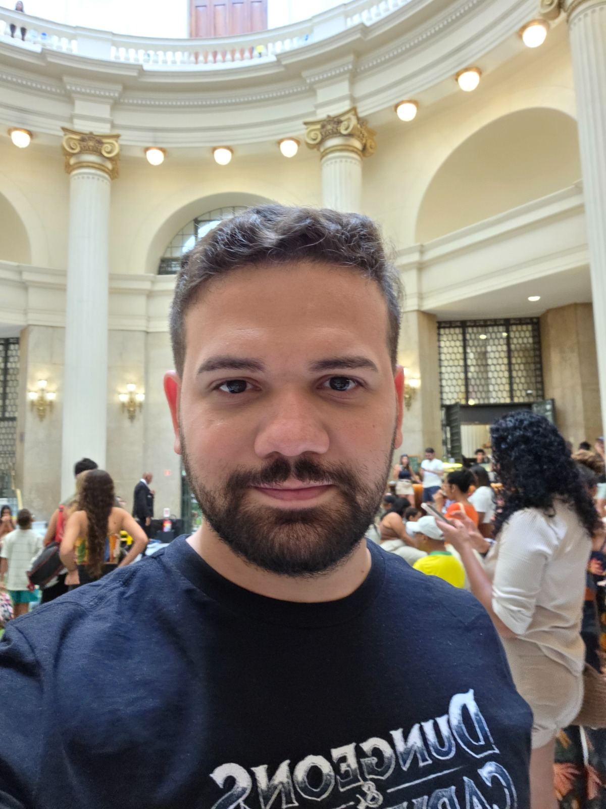

Estudante de Ciência da Computação

Meu nome é Eduardo Guimarães Santos e tenho 30 anos. Desde a minha pré-adolescencia eu sou uma pessoa interessada por tecnologia. quando eu ganhei meu primeiro computador, na época ainda branco e com monitor de tubo, por não haver dinheiro para sempre pagar um técnico quando dava problema, eu tive que aprender sozinho a resolver os problemas. Já na adolescência eu consertava o computador de familiares e amigos. Então fiz um curso de montagem e manutenção comunitário, o que me fez aumentar o interesse pela área de tecnologia. Mais a frente eu tive a oportunidade de fazer um curso técnico em eletrônica pelo Senai, onde aprendi muito sobre eletrônica A area de eletrônica sempre me puxou para a area de TI. Então, conforme comecei a trabalhar com eletrônica tive contato com a area de Segurança eletrônica e dentro deste nicho fiquei mais próximo das atividades de TI. Atualmente esta area se mescla bastante com a de tecnologia da informação em muitos casos sendo ensenssial o conhecimento em softwares, servidores, rede e entre outros. Eu também tenho interesse em um dia ser professor, dessa forma, antes de iniciar em ciencia da computação eu tentei fazer licenciatura em física, porém, devido a problemas de horário e distância, foi necessário parar, contudo não abandonarei este desejo para minha vida, e futuramente pretendo retomar este curso.